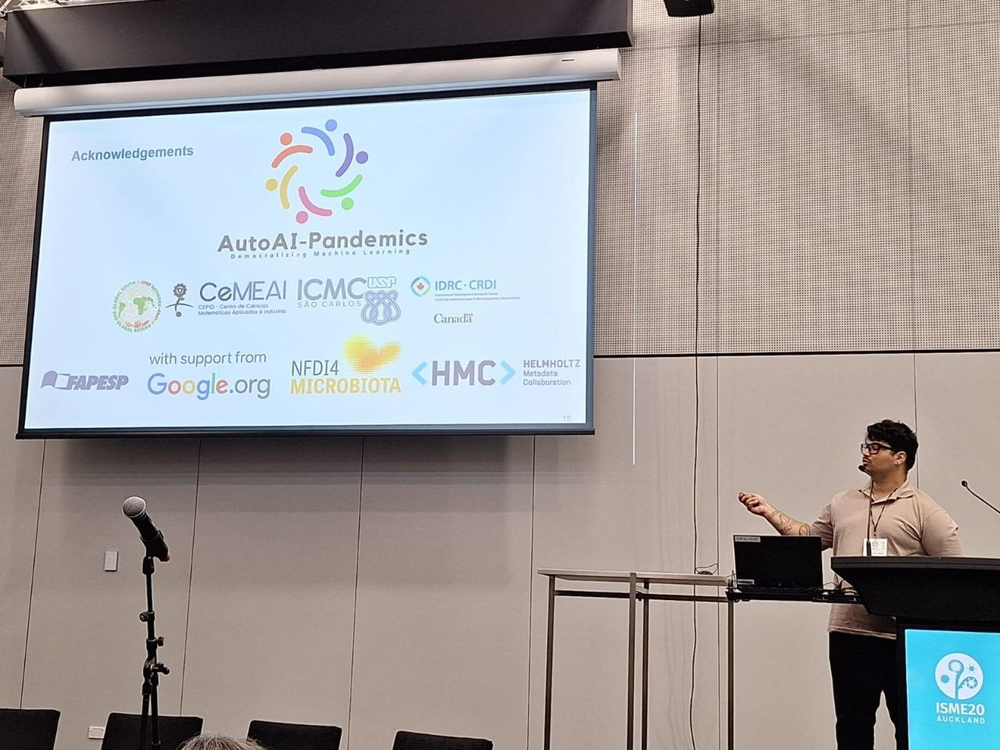
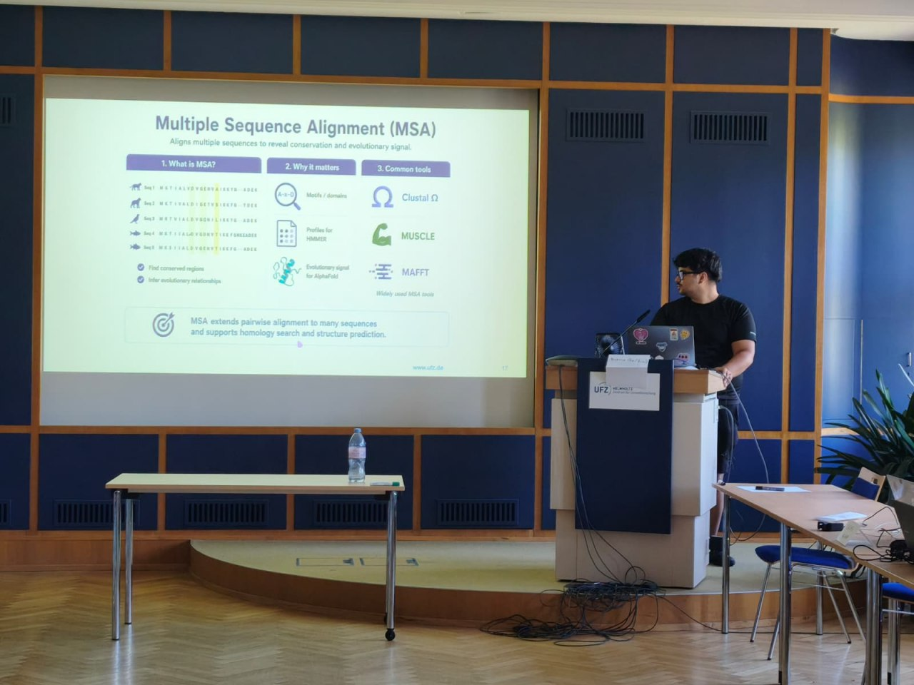
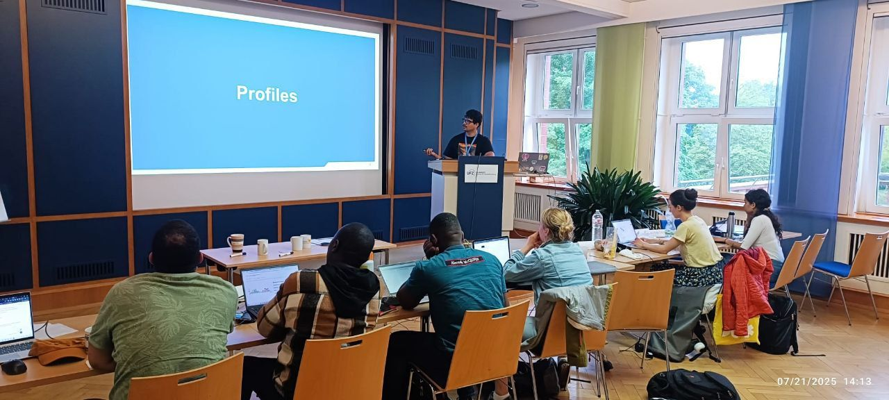
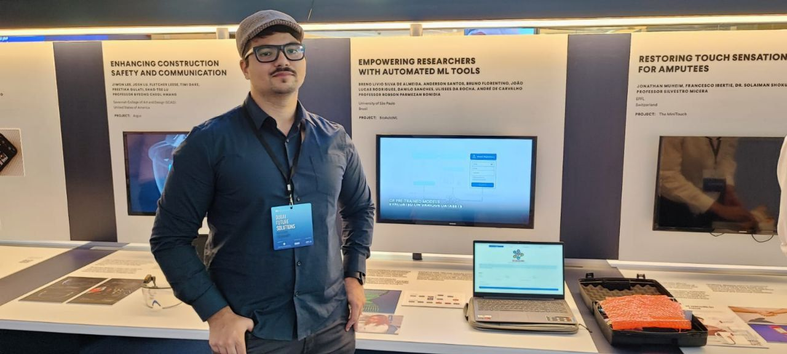
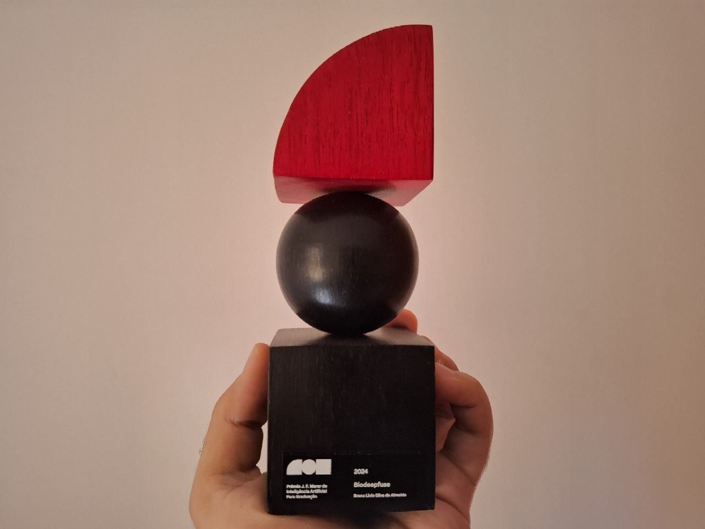

Previous Events
2026
16 - 21 August - Attended ISME20, the 20th International Symposium on Microbial Ecology, in Auckland, New Zealand. I gave an oral presentation on my work with protein language models and presented a poster on BioAutoML-FAST.

13 July - 4 August - Completed an additional research stay at UFZ in Leipzig with support from the ISME Scholar Mobility Fund. I helped organize the UFZ Summer School on Trends in Multi-Omics Data Analysis for Microbial Ecology and Biotechnology, held from 13 to 31 July, and taught Unix, Bash, Git, machine learning, alignment-based methods, and other alignment-free methods for biological sequence analysis.

30 June - Completed my one-year contract at the Helmholtz Centre for Environmental Research (UFZ) and returned to Brazil.
2025
18 November - Received the ISME Scholar Mobility Fund to support an additional research period at UFZ in Leipzig.
28 October - Visited Helmholtz Munich for a meeting with Prof. Dr. Michael Schloter and Dr. Ulisses Rocha about EReMiD, a joint UFZ–Helmholtz Munich project focused on making microbiome data more findable, accessible, interoperable, and reusable.
23 October - Received the 2025 Google Latin America PhD Fellowship in Health.
30 September - 2 October - Attended the NFDI4Microbiota Annual Conference 2025 in Cologne.
7 - 25 July - Attended the UFZ Summer School - Trends in multi-omics data analysis, also giving lectures.

7 July - My in-person contract with UFZ started and I moved to Leipzig.
4 July - My work was also selected as a flash talk at the BAGECO 2025 (Graz, Austria) to be presented this day.
5 June - My work on protein language models was chosen for presentation at the Helmholtz AI 2025 conference (Rheinstetten, Germany), being presented this day.
2024
17 - 22 November: BioAutoML was selected by Prototypes for
Humanity as one of the top 100 projects from nearly 3,000 applications
submitted by graduates from over 100 countries. The project received
funding for participation and was presented at the international festival
in Dubai. More information is available at: BioAutoML on the event website.

31 August: Co-authored a paper in Nature Communications based on research during my internship at the Big Data Biology Lab.
02 July: I officially joined the PhD program at the Institute of Mathematics and Computer Sciences (ICMC) of the University of São Paulo (USP).
23 March: BioDeepFuse was published in the RNA Biology journal.
29 February: I received the J. F. Marar Artificial Intelligence Prize for Undergraduate Research
with the project "BioDeepFuse:
Empowering Researchers in Life Sciences with Deep Learning". Project was
selected winner considering criteria such as academic and social relevance,
adherence to the United Nations' Sustainable Development Goals (SDGs), and
academic performance. More details in Portuguese here:
News shared by the University of São Paulo.

2023
26 - 30 June: BioDeepFuse was presented as an abstract at the 16th symposium on Genetics and Bacterial Ecology 2023 (BAGECO 2023) in Copenhagen, Denmark.
9 - 13 July: BioAutoML was presented as an abstract at the 10th FEMS Congress of European Microbiologists in Hamburg, Germany.
2022
1 July - 30 September: Period of my internship at the Big Data Biology Lab. I worked on the rarefaction of small ORFs, and the work can be consulted on this blog post.
27 June: BioAutoML was published in Briefings in Bioinformatics.
2021
22 - 26 November: I presented our work on feature importance analysis of non-coding DNA/RNA sequences at the Brazilian Symposium on Bioinformatics (BSB) 2021. The presentation can be found here and full paper here.